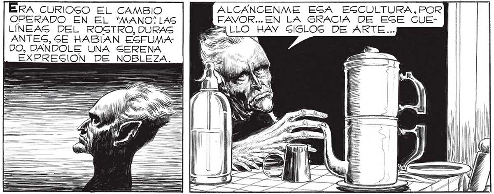

172 Gr y, Y (A GA, TODO PASO YA PARA MÍ... Y, EN VERDAD, NO ME QUEJO. VALÍA LA PENA, DESPUES DE TODO, VENIR e ZA LEJOS... NO ES UNA ESCULTURA... ES _ LUNA CAFETERA... IGNORO LO QUE ES EGO... POGIBLEMENTE UN ¡MPLEMENTO DE USO DOMÉGSTICO.. EL NOMBRE NO LES DIRA" NADA... | ADEMAS ME QUEDA POCO TIEMPO PARA PERDERLO EN EXPLICACIONES... MEJOR GOZAR CON LA PROXIMIDAD DE TODOS ESTOS OBJETOS... | RA CURIOGO EL CAMBIO OPERADO EN EL "MANO: LAS LÍNEAS DEL ROSTRO, DURAS ANTES, SE HABÍAN EGFUMADO, DANDOLE UNA SERENA EXPRESION DE NOBLEZA. ¿SE DAN CUENTA LOG HOMBRES DE TODAS LAG MARAVILLAG QUE LOGS RODEAN?éTIENEN IDEA DE CUANTOS MUNDOS HABITADOS | HAY EN EL UNIVERGO, Y DE CUAN POCOS SON LOS QUE HAN FLORECIDO EN OBJETOS COMO ESTE ? CADA COGA IRRADIA AQUÍ MILENIOS DE INTELIGENCIA... MILENIOS DE ARTE, MILENIOS DE TERNURA... LASTIMA NO TENER TIEMPO PARA SABER POR QUÉ ESE RECIPIENTE ES CILÍNDRICO, POR QUÉ TIENE MOLDURAS LA PATA DE EGSA as ALCANCENME ESA ESCULTURA, POR |FAVOR..EN LA GRACIA DE ESE CUEREA LLO HAY SIGLOS DE ARTE. IGUIO HABLANDO. AL CONJURO DE GUS PALA BRAS EL ABOLLADO TA RRO DE VERBA, LAS CACEROLAS TIZÑADAS, LA DEGVENCIJADA COCINA DE CARBON, SE TORNARON EN OBJETOS ÚNICOS, MAS VALIOSOG AÚN QUE Sl FUERAN ALHAJAS SACADAG DE UNA TUMBA EGIPCIA. ALLA EN NUESTRO PLANETA, HAY UN OBJETO PARECIDO; SIRVE PARA UNA GEREMONIA MUY BELLA, TODAS LAS TARDES, CUANDO SE PONEN LOGS DOS SOLES... ¿CUAL ES TU PLANETA, "MANO? [LASTIMA QUE LOS HOMBRES SOLO DAN VALOR A LO RARO... NO APRECIAN LO QUE ABUNDA... PARA ELLOG VALE MAS UN PEDAZO DE ORO EN BRUTO, SIN TRABAJAR, QUE UNA HOJA DE ARBOL O UNA PLUMA DE ¿POR QUÉ HA" BLAS TAN BAJO, 'MANO”P2¿TE SIENTES MAL?
